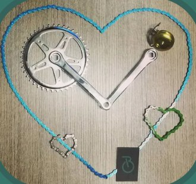
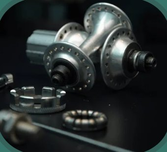
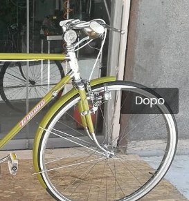

Home / Officina e restauro
Tutto si ripara!
Officina per bici, e-bike e monopattini
Non chiederti, non chiederci se lo ripariamo: la risposta sarà, quasi sempre, sì. Bici da strada, mountain bike, vintage ed e-bike, per amatori e professionisti.

Listino officina
Prezzi chiari prima di iniziare. Per lavori più complessi ti mandiamo un preventivo su WhatsApp.
- Tagliando completo bicida € — prezzo
- Regolazione freni e cambioda € —
- Riparazione foraturada € —
- Sostituzione catena e cassettada € —
- Spurgo freni idraulicida € —
- Controllo e-bike e batteriada € —
- Riparazione monopattini elettricida € —
- Montaggio accessori acquistati da noigratis
I prezzi li mettete voi: si aggiornano da soli su tutto il sito.
Prenota una riparazione
Scegli cosa ti serve: ti rispondiamo su WhatsApp con giorno e orario.
Puoi allegare una foto o un video del problema direttamente nella chat.
Ritiro e consegna a domicilio
Non hai tempo o un modo per portarci la bici? Veniamo noi a prenderla e te la riportiamo riparata.
- Su appuntamento, durante l'orario del negozio
- Contributo spese in base alla distanza
- Bari e dintorni
Ricambi originali
Pezzi originali per city bike, MTB, bici da corsa ed elettriche: ruote, catene, cassette, pastiglie dei freni e ogni meccanismo che rende la tua bici efficiente.



Restauro e personalizzazione
Non lasciare la tua vecchia bici in soffitta: portala da noi, le daremo una seconda vita.
Rispettiamo l'originalità della bici e cerchiamo con cura i pezzi di ricambio. E se vuoi una bici fatta apposta per te, la progettiamo insieme: componenti, colori, assetto.
Mandaci una foto della tua bici